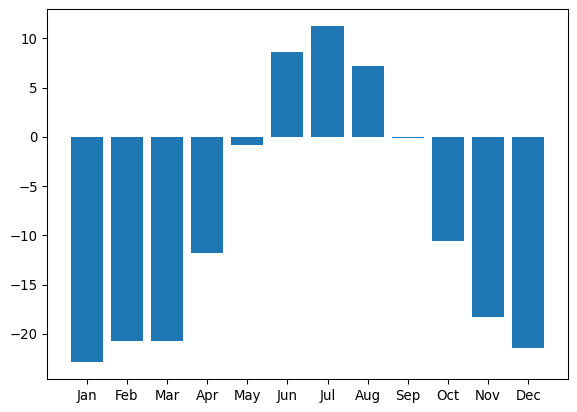
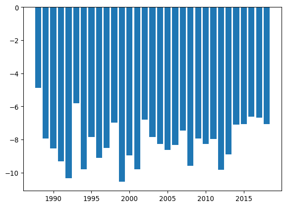

End Activity Session (Day 1)
import pandas as pd
import matplotlib.pyplot as plt
Toolik from the boardwalk (source)[https://media.arcus.org/album/polartrec-2019-alejandra-martinez/30679]
In this exercise, you will work with climate data using the Python data science workflow. You’ll load the data into a pandas DataFrame, perform basic exploration and cleaning, and create visualizations. This hands-on practice will help you understand how Python can be used for data analysis, with comparisons to similar tasks in R.
Setup and Data Loading
Open JupyterLab and Start a New Notebook
Import Libraries
pandas) and create plots (matplotlib.pyplot). Use the standard python conventions that import pandas as pd and import matplotlib.pyplot as pltimport pandas as pd
import matplotlib.pyplot as pltOur data is located at:
https://raw.githubusercontent.com/environmental-data-science/eds217-day0-comp/main/data/raw_data/toolik_weather.csv
url that stores the URL provided above.read_csv() function from pandas to load the data from the URL into a new DataFrame called df. Any pandas function will always be called using the pd object and dot notation: pd.read_csv()url = 'https://raw.githubusercontent.com/environmental-data-science/eds217-day0-comp/main/data/raw_data/toolik_weather.csv'
df = pd.read_csv(url)Syntax Similarities: The read_csv() function in pandas is similar to read.csv() in R.
Data Exploration
Preview the Data
head() method to display the first few rows of the DataFrame df.Note: Because the head() function is a method of a DataFrame, you will call it using dot notation and the dataframe you just created: df.head()
df.head()| Year | Month | Date | LTER_Site | Station | Daily_AirTemp_Mean_C | Flag_Daily_AirTemp_Mean_C | Daily_AirTemp_AbsMax_C | Flag_Daily_AirTemp_AbsMax_C | Daily_AirTemp_AbsMin_C | ... | Daily_Precip_Total_mm | Flag_Daily_Precip_Total_mm | Daily_windsp_mean_msec | FLAG_Daily_windsp_mean_msec | Daily_Windspeed_AbsMax_m_s | Daily_globalrad_total_jcm2 | FLAG_Daily_globalrad_total_mjm2 | Moss | Soil20cm | Comments | |
|---|---|---|---|---|---|---|---|---|---|---|---|---|---|---|---|---|---|---|---|---|---|
| 0 | 1988 | 6 | 19880601 | ARC | TLKMAIN | 8.4 | E | NaN | NaN | NaN | ... | 0.0 | E | NaN | NaN | NaN | NaN | NaN | NaN | NaN | Air temp 1 & 5 meter estimated from regressio... |
| 1 | 1988 | 6 | 19880602 | ARC | TLKMAIN | 6.0 | E | NaN | NaN | NaN | ... | 0.0 | E | NaN | NaN | NaN | NaN | NaN | NaN | NaN | Air temp 1 & 5 meter estimated from regressio... |
| 2 | 1988 | 6 | 19880603 | ARC | TLKMAIN | 5.8 | E | NaN | NaN | NaN | ... | 0.0 | E | NaN | NaN | NaN | NaN | NaN | NaN | NaN | Air temp 1 & 5 meter estimated from regressio... |
| 3 | 1988 | 6 | 19880604 | ARC | TLKMAIN | 1.8 | E | NaN | NaN | NaN | ... | 0.0 | E | NaN | NaN | NaN | NaN | NaN | NaN | NaN | Air temp 1 & 5 meter estimated from regressio... |
| 4 | 1988 | 6 | 19880605 | ARC | TLKMAIN | 6.8 | E | NaN | NaN | NaN | ... | 2.5 | E | NaN | NaN | NaN | NaN | NaN | NaN | NaN | Air temp 1 & 5 meter estimated from regressio... |
5 rows × 21 columns
Syntax Similarities: In R, you would use head(df) to view the first few rows.
Check for Missing Values
isnull() method combined with sum() to count missing values in each column.df.isnull().sum()Year 0
Month 0
Date 0
LTER_Site 0
Station 0
Daily_AirTemp_Mean_C 0
Flag_Daily_AirTemp_Mean_C 9861
Daily_AirTemp_AbsMax_C 170
Flag_Daily_AirTemp_AbsMax_C 10151
Daily_AirTemp_AbsMin_C 204
Flag_Daily_AirTemp_AbsMin_C 9935
Daily_Precip_Total_mm 420
Flag_Daily_Precip_Total_mm 8002
Daily_windsp_mean_msec 826
FLAG_Daily_windsp_mean_msec 11170
Daily_Windspeed_AbsMax_m_s 846
Daily_globalrad_total_jcm2 7053
FLAG_Daily_globalrad_total_mjm2 11156
Moss 838
Soil20cm 820
Comments 2247
dtype: int64Hint: In R, you might use sum(is.na(df$column)) to check for missing values.
**Note:** You should see that the `Daily_AirTemp_Mean_C` doesn't have any missing values. This means we can skip the usual step of dealing with missing data. We'll learn these tools in Python and Pandas later in the course. Data Summary
describe() method to generate summary statistics for numerical columns.info() method to get an overview of the DataFrame, including data types and non-null counts. Just like the head() function, these are methods associated with your df object, so you call them with dot notation.df.describe()
df.info()<class 'pandas.core.frame.DataFrame'>
RangeIndex: 11171 entries, 0 to 11170
Data columns (total 21 columns):
# Column Non-Null Count Dtype
--- ------ -------------- -----
0 Year 11171 non-null int64
1 Month 11171 non-null int64
2 Date 11171 non-null int64
3 LTER_Site 11171 non-null object
4 Station 11171 non-null object
5 Daily_AirTemp_Mean_C 11171 non-null float64
6 Flag_Daily_AirTemp_Mean_C 1310 non-null object
7 Daily_AirTemp_AbsMax_C 11001 non-null float64
8 Flag_Daily_AirTemp_AbsMax_C 1020 non-null object
9 Daily_AirTemp_AbsMin_C 10967 non-null float64
10 Flag_Daily_AirTemp_AbsMin_C 1236 non-null object
11 Daily_Precip_Total_mm 10751 non-null float64
12 Flag_Daily_Precip_Total_mm 3169 non-null object
13 Daily_windsp_mean_msec 10345 non-null float64
14 FLAG_Daily_windsp_mean_msec 1 non-null object
15 Daily_Windspeed_AbsMax_m_s 10325 non-null float64
16 Daily_globalrad_total_jcm2 4118 non-null float64
17 FLAG_Daily_globalrad_total_mjm2 15 non-null object
18 Moss 10333 non-null float64
19 Soil20cm 10351 non-null float64
20 Comments 8924 non-null object
dtypes: float64(9), int64(3), object(9)
memory usage: 1.8+ MBSyntax Similarities:: summary(df) and str(df) are R equivalents for summarizing and checking structure. Notice a pattern forming… Other than differences in function names (i.e. “Boot†vs. “Boot†in American/British English), a major “grammar†difference between R and Python is Python’s frequent use of dot notation for calling methods of objects!
Data Analysis
Calculate Monthly Average Temperature
groupby() method to group the data by the ‘Month’ column and save this as a new variable called monthly.monthly using the mean() function. Save this result to a new variable called monthly_means.monthly = df.groupby('Month')
monthly_means = monthly['Daily_AirTemp_Mean_C'].mean()Note: You can do analysis on a specific column in a dataframe using [column_nanme] notation: my_df["column A"].mean() would give the average value of “column A†(if there was a column with that name in the dataframe). In the coming days, we will spend a lot of time learning how to select and subset data in dataframes!
Syntax Similarities: This analysis is similar to using group_by() and summarize() in dplyr.
Plot Monthly Average Temperature
plot() method to create a line plot of the monthly average temperature.plot() function is a method of the plt library you imported at the start of your code.Syntax Similarity: Use plt.plot() or plot.bar() to create plots. In R, you would use ggplot().
plt.plot(monthly_means)
months = ['Jan','Feb','Mar','Apr','May','Jun','Jul','Aug','Sep','Oct','Nov','Dec']
plt.bar(months, monthly_means)Analyze Temperature Trends Over Years
groupby() to explore how temperature trends change over the years.Hint: Similar to calculating monthly averages, group by the ‘Year’ column.
year = df.groupby('Year')
yearly_means = year['Daily_AirTemp_Mean_C'].mean()
plt.plot(yearly_means)
year_list = df['Year'].unique()
plt.bar(year_list, yearly_means)
End Activity Session (Day 1)